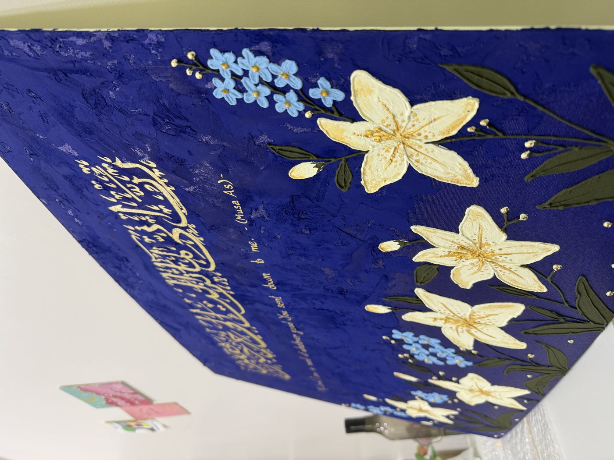
01
Composition
We choose the verse together, then the palette and format — sized to your wall, measured and laid out by hand.
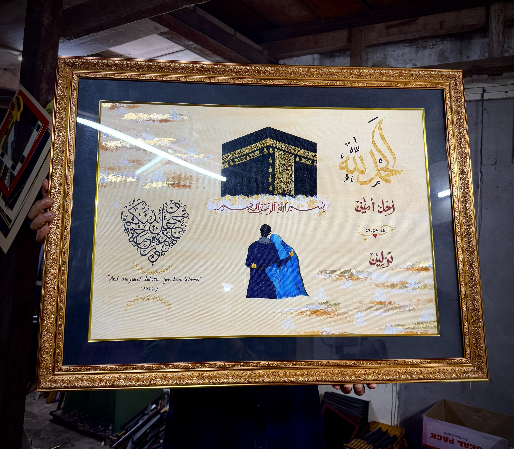
Commissions open
Weddings, new homes, gifts of remembrance — an original painting built around the words you hold closest.
The philosophy
A commission is a correspondence, not an order form. You bring the verse, the occasion, the room it will live in; Jabin brings composition, script and illumination. Nothing is printed and nothing is rushed — every stroke is laid by hand, and no two pieces are ever alike.
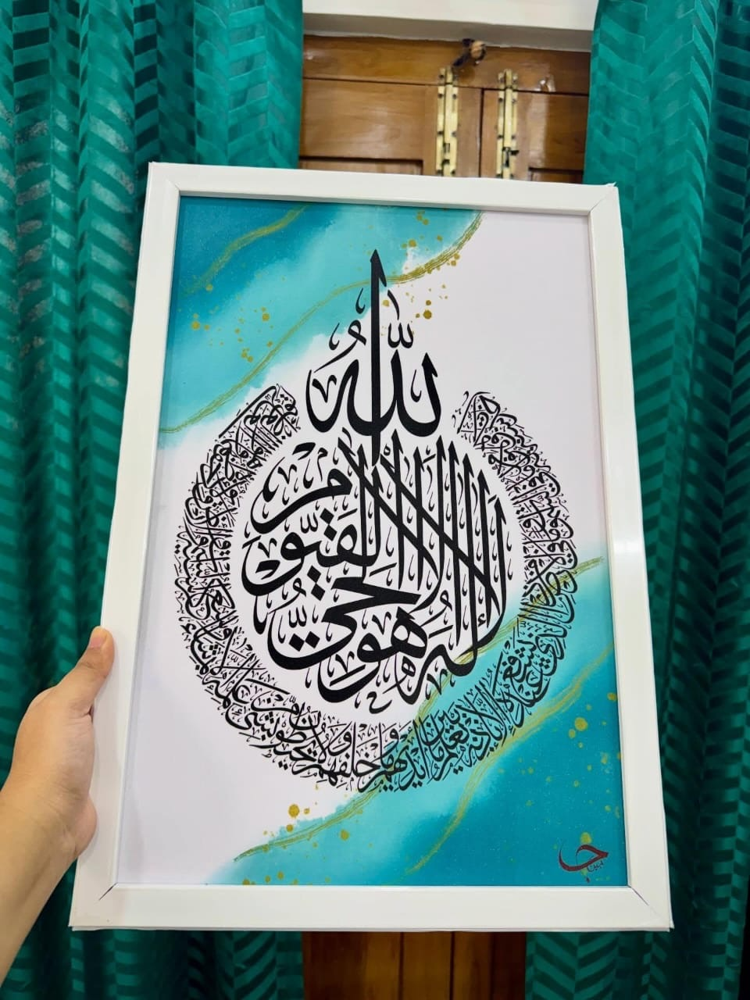
The process

We choose the verse together, then the palette and format — sized to your wall, measured and laid out by hand.
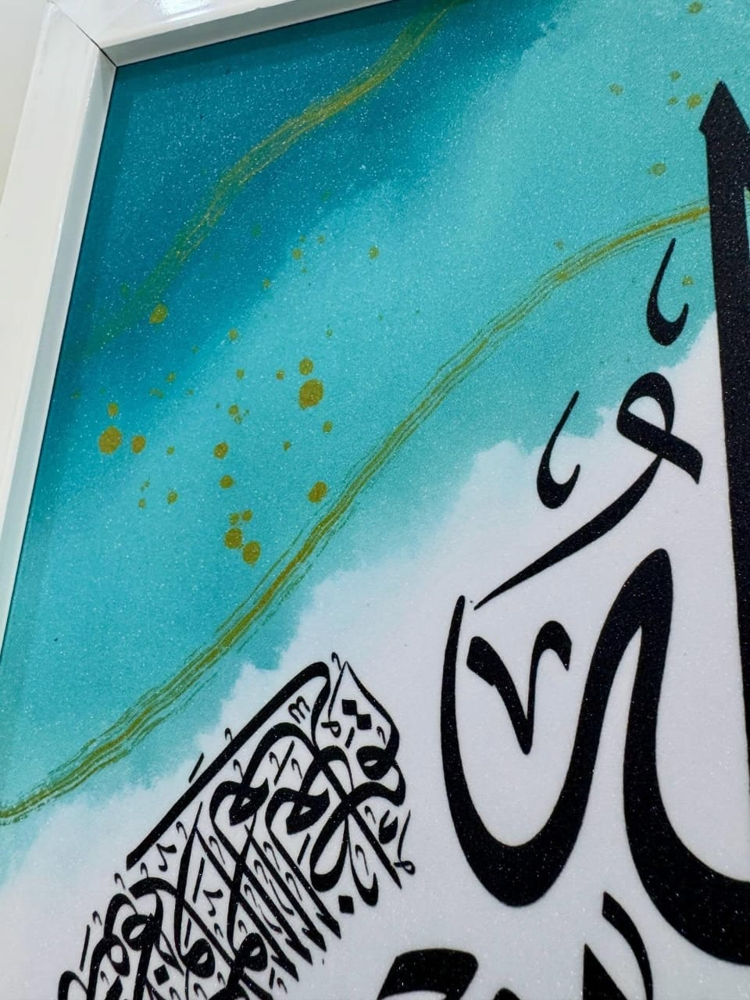
The script is drawn stroke by patient stroke, with progress photos along the way — you watch the verse take shape.
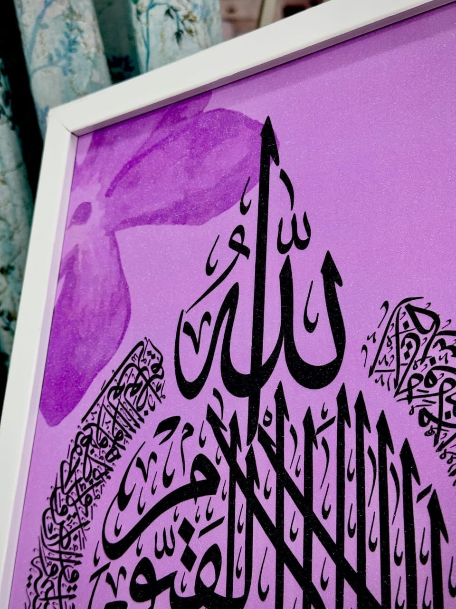
Gold detailing, raised florals, framing and glazing — then careful packing and delivery to your door.
Recent commission
Every commission ends with a full reveal — video and photographs in daylight, so you know exactly what is travelling to you. Worldwide shipping, packed like it matters.
Commissioned works
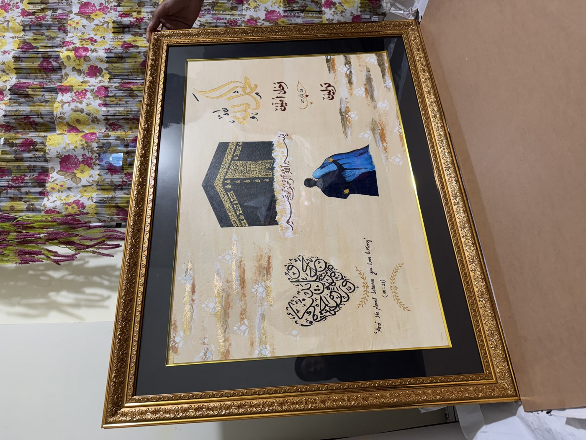
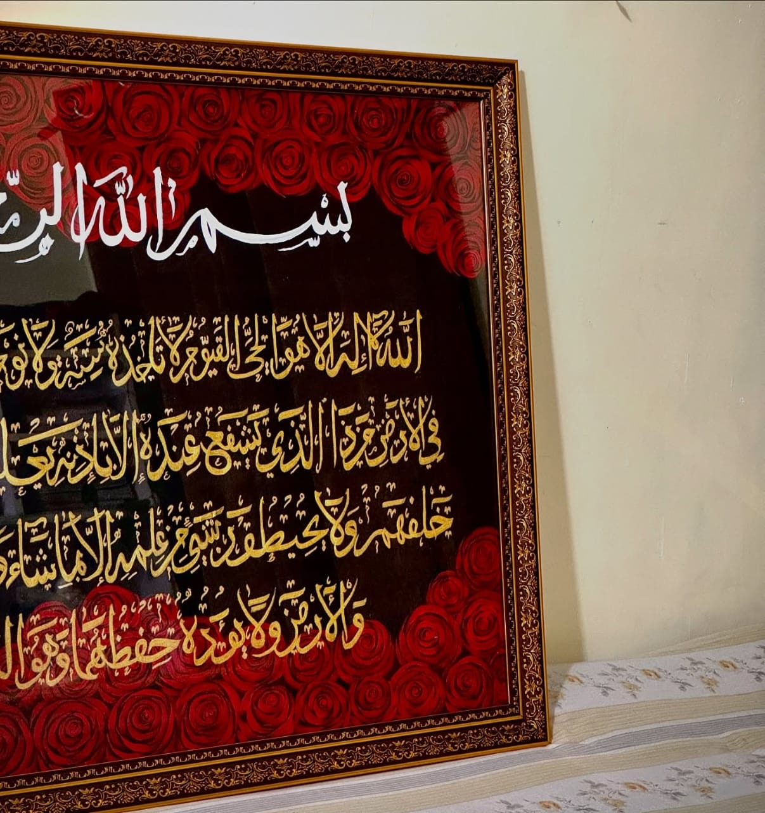
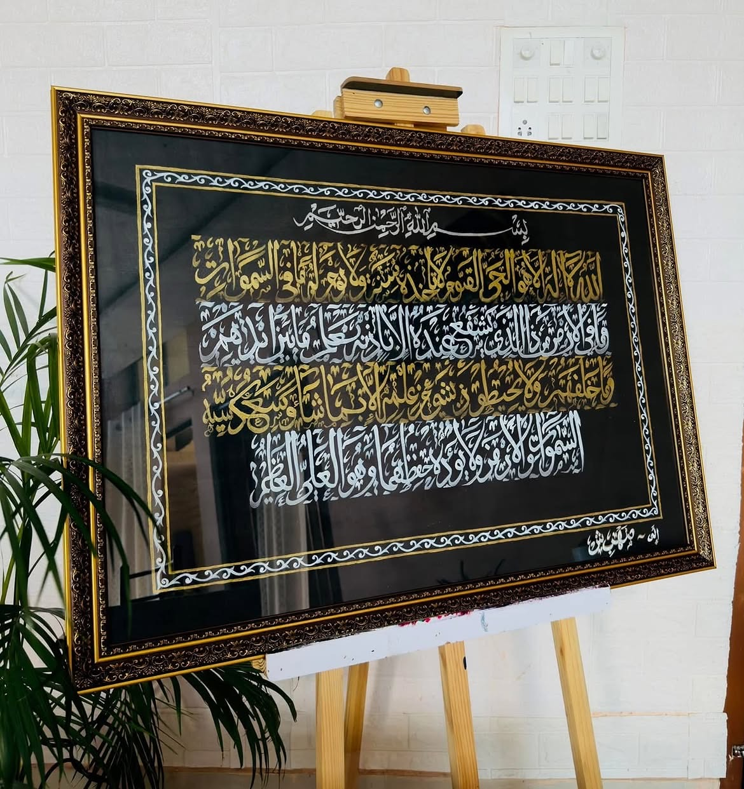
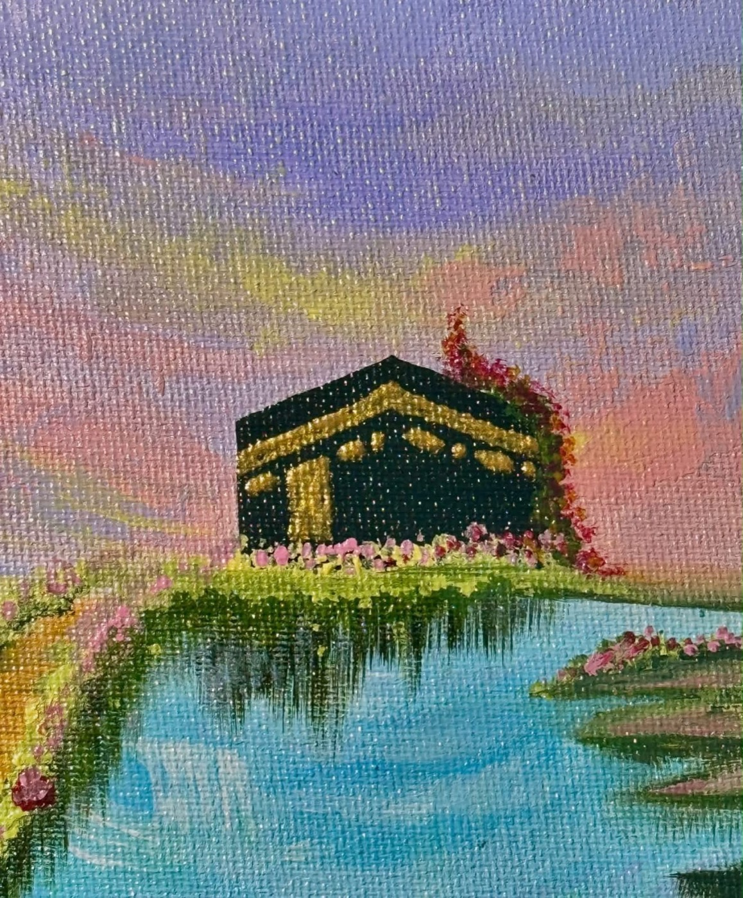
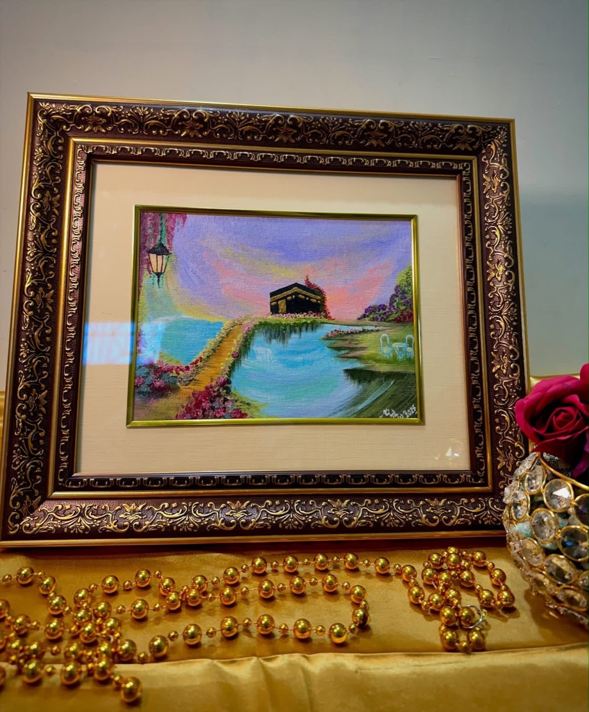
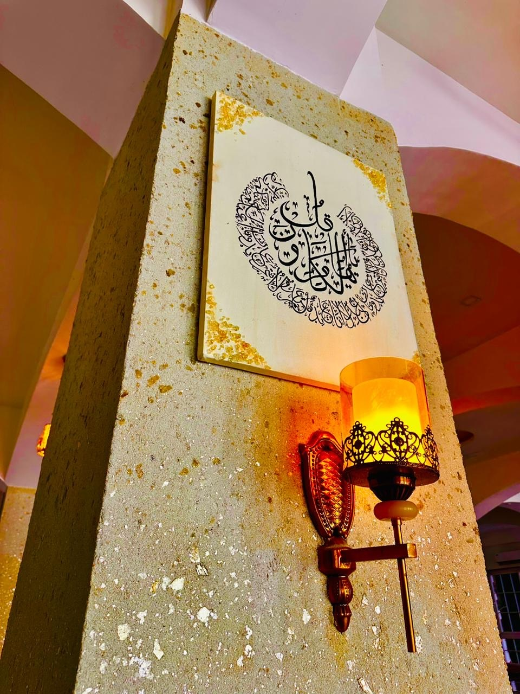
Begin
Share the words, the occasion and your timeline — you’ll get a sketch direction, sizing options and a quote.
@jabin_arts__ · jabinakhterb@gmail.com